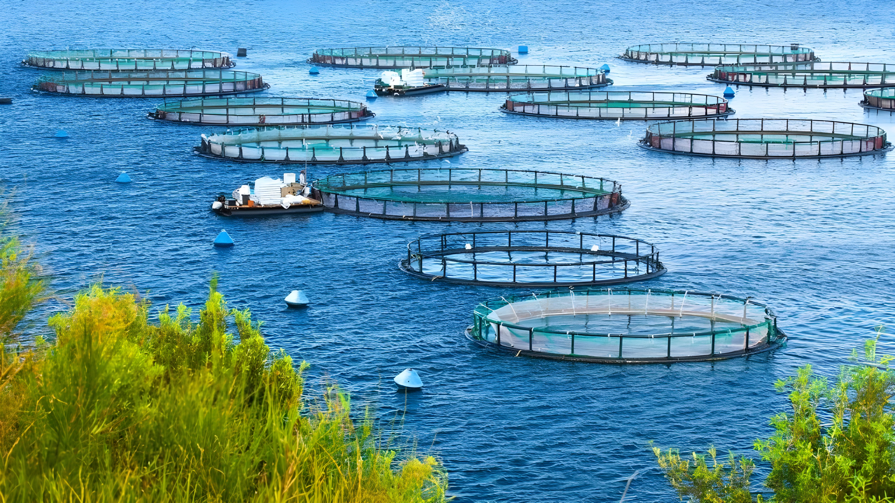

Introduction
Aquaculture ecosystems involve the controlled farming of aquatic organisms such as fish, shellfish, algae, and aquatic plants in freshwater and marine environments. These systems help meet global food demand and reduce pressure on wild fish populations.
Key Features
Aquaculture systems may include ponds, tanks, cages, and coastal farms.Water quality, nutrient management, and controlled breeding are essential features that ensure productivity and sustainability.
Flora of Estuarine Ecosystem
Estuarine ecosystems support a rich variety of plant life that is specially adapted to survive in fluctuating salinity levels. Mangroves are one of the most important plants found in estuaries, with their complex root systems helping to stabilize shorelines and reduce soil erosion. Salt marsh grasses grow in shallow waters and muddy areas, playing a vital role in trapping sediments and improving water quality.
Seagrasses and algae are also common in estuarine regions. These plants perform photosynthesis efficiently and form the base of the food chain. By providing oxygen, shelter, and breeding grounds, estuarine flora supports both aquatic and terrestrial life while maintaining ecological balance.
Fauna of Estuarine Ecosystem
Estuaries are home to a wide range of animal species due to their abundant food supply and protective environment. Fish such as salmon, mullet, and anchovies use estuaries as nursery grounds where young fish can grow safely before moving into the open sea. Crabs, shrimp, oysters, and mollusks thrive in estuarine waters and contribute significantly to the ecosystem’s productivity.
Estuarine ecosystems also support amphibians, reptiles, and a large number of migratory birds. Birds rely on estuaries for feeding, nesting, and resting during long migrations. The diverse fauna of estuaries highlights their importance in maintaining biodiversity and supporting global food webs.
Importance of Aquaculture
Aquaculture provides a reliable source of protein, supports livelihoods, boosts local economies, and contributes to food security while reducing overfishing in natural ecosystems.
Environmental Impact
Poorly managed aquaculture can lead to water pollution, disease spread, and habitat degradation. Sustainable practices are essential to minimize negative environmental effects.
Sustainable Practices
Sustainable aquaculture focuses on efficient feed use, waste management, eco-friendly farming techniques, and maintaining biodiversity to ensure long-term ecosystem health.
Conclusion
Aquaculture ecosystems play a crucial role in global food production. When managed responsibly, they support economic growth while protecting natural aquatic environments.